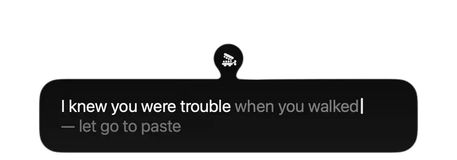

hold fn.
have a yap.
talk, let go, and your words are pasted wherever your cursor is.
it's your mac doing the work.
not even the “um”.
a very short
instruction sheet.
yap sits at the edge of your screen.
you stay in whatever you're doing.
double-tap fn for hands free. tap again to paste.
esc or fn + another key cancels.
the actual app,
having a yap.


small parts.
kept to itself.
i wrote yap to replace wispr flow. it sat on 1.3 gb of ram and about 5% cpu whether i was talking or not. yap sits on about 0.1 gb and only works while i'm talking.
it uses apple's on-device speechtranscriber. transcripts are kept for 30 days, then deleted. recordings are off unless you turn them on. you can change that, or delete the lot, in settings.
it also learns your words. if “Redis” is in your window and it hears “reddis”, it fixes it. it learns corrections and drops fillers you keep deleting. ordinary words are left alone by the word learner. it doesn't keep what it read.
cleanup: medium by default
light takes out um, uh and stumbles. medium also fixes punctuation and grammar a sentence at a time, keeping your words.
heavy also drops what you take back and turns lists into bullets. “send it to john, no wait, sarah” becomes “send it to Sarah”.
the small print.
at a readable size.
it isn't the most accurate.
it is quite a bit smaller.
| engine | error rate | wait | ram |
|---|---|---|---|
| parakeet v3 (mlx) | 7.4% | 0.5 s | 1.1 gb |
| wispr flow (cloud) | 7.4% | 0.6 s | 1.3 gball the time |
| yap (apple) | 8.6% | 0.9 s | 0.1 gb |
| whisper large-v3-turbo | 11.1% | 1.4 s | 0.9 gb |
nothing leaves your mac. the yap row, anyway.
i ran about 10 minutes of my old dictations through each engine. nobody hand-checked them: each is scored against what the others agreed on. useful for comparing them, not an exact accuracy. the full test and its caveats.
take it home.
free. mac only. macos 26.
brew tap 0xdeafcafe/yap https://github.com/0xdeafcafe/yap
brew install --cask yapit'll ask for the microphone to hear you, and accessibility to see fn and press ⌘V.
quit wispr flow first, or both will paste.
yap takes over fn while it's running. your emoji picker setting comes back when you quit.
don't use homebrew? get the latest release.